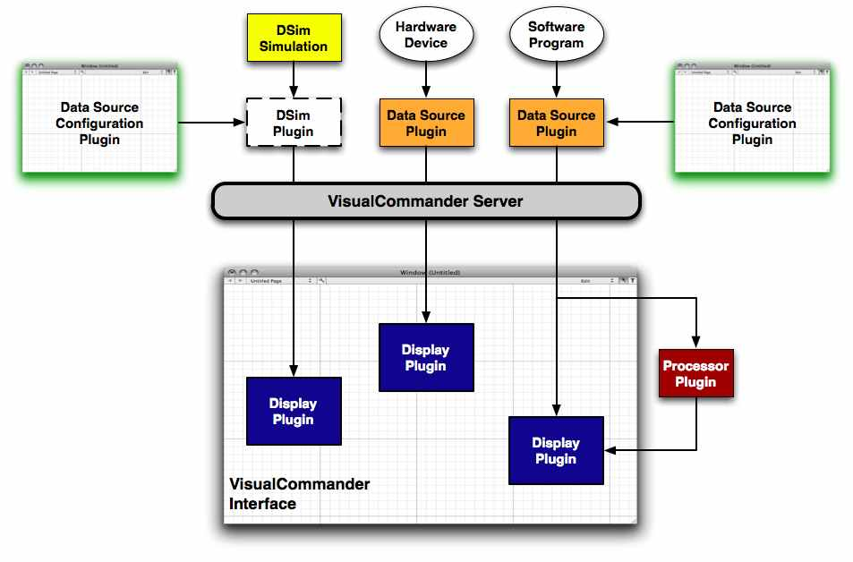

VisualCommander is an extensible package designed to make it easy for you to add your own code for analysis, simulations, displays or data acquisition. For users on Mac OS X the development environment of choice is XCode.
For technical details regarding the creation of the various types of plugins, please see the API documentation.
There are 5 different components of VisualCommander that can be customized through writing your own code:
The diagram below illustrates how each of these different components fit together within the overall VisualCommander framework. Data source plugins serve as an interface between various external data sources and the VisualCommander server. The DSim simulation engine serves as a built-in data source. Data from the server is used to drive the data display plugins, which enable you to visualize data in a variety of ways. The raw data can be manipulated via data processor plugins, and the newly derived outputs can also be used to drive the displays.
An overview of the four types of plugins is provided below. Details of their creation is beyond the scope of this help, but can be found in the external programming documentation.
Display Plugins are an extension of Data Consumers that provide visualization of data; they otherwise are identical to Processors, the other type of Data Consumer. They receive input data from sessions or other Data Consumers, and, in addition to visualizing that data, can also send commands to sessions and produce calculated outputs.
Processors are an extension of Data Consumers optimized for producing calculated outputs. They are full Data Consumers, however, and can be written the same fashion as Display Plugins without a visualization component. VisualCommander provides a built-in library of processors that perform such data transformations as matrix transposes, but users can write their own processors to provide custom client-side calculation for subsequent visualization
Data Source Plugins provide new ways of getting data into VisualCommander. The possibilities are endless: a Data Source Plugin could run simulations, control test hardware, retrieve data from the internet or command remote systems. The end user can create whatever plugin is necessary to fulfill their needs and be assured that VisualCommander's visualization tools can be leveraged to help manage it.
Data Source Configurators provide a user interface for the configuration of various types of Data Sources. Each Configurator operates on a specific Data Source, and many different Configurators can exist for the same source. When a Session is created, the desired configurator is specified along with the data source type. When the resulting session is then configured, the Configurator's interface is displayed to perform the configuration. By writing Configurator plugins, a user can provide Session setup exactly customized to the user's problem domain, without needing to modify VisualCommander itself.